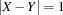

| << Prev | - Up - |
This example shows a clever problem representation avoiding possible symmetries. It also illustrates the use of defined constraints.
Five men with different nationalities live in the first five houses of a street. There are only houses on one side of the street. The men practice distinct professions, and each of them has a favorite drink and a favorite animal, all of them different. The five houses are painted with different colors. The following facts are known:
The Englishman lives in a red house.
The Spaniard owns a dog.
The Japanese is a painter.
The Italian drinks tea.
The Norwegian lives in the first house.
The owner of the green house drinks coffee.
The green house comes after the white one.
The sculptor breeds snails.
The diplomat lives in the yellow house.
Milk is drunk in the third house.
The Norwegian's house is next to the blue one.
The violinist drinks juice.
The fox is in the house next to that of the doctor.
The horse is in the house next to that of the diplomat.
The zebra is in the white house.
One of the men drinks water.
Who lives where?
We number the houses from 1 to 5, where 1 is the first and 5 is last house in the street. There are 25 different properties (i. e. hosting an Englishman, being the green house, hosting a painter, hosting a dog, or hosting someone who drinks juice), and each of these properties must hold for exactly one house. The properties are partitioned into five groups of five members each, where the properties within one group must hold for different houses. The model has one variable for each of these properties, where the variable stands for the number of the house for which this property holds.
We distribute on the variables for the properties with the standard first-fail strategy.
proc {Zebra Nb}
Groups = [ [english spanish japanese italian norwegian]
[green red yellow blue white]
[painter diplomat violinist doctor sculptor]
[dog zebra fox snails horse]
[juice water tea coffee milk] ]
Properties = {FoldR Groups Append nil}
proc {Partition Group}
{FD.distinct {Map Group fun {$ P} Nb.P end}}
end
proc {Adjacent X Y}
{FD.distance X Y '=:' 1}
end
in
%% Nb maps all properties to house numbers
{FD.record number Properties 1#5 Nb}
{ForAll Groups Partition}
Nb.english = Nb.red
Nb.spanish = Nb.dog
Nb.japanese = Nb.painter
Nb.italian = Nb.tea
Nb.norwegian = 1
Nb.green = Nb.coffee
Nb.green >: Nb.white
Nb.sculptor = Nb.snails
Nb.diplomat = Nb.yellow
Nb.milk = 3
{Adjacent Nb.norwegian Nb.blue}
Nb.violinist = Nb.juice
{Adjacent Nb.fox Nb.doctor}
{Adjacent Nb.horse Nb.diplomat}
Nb.zebra = Nb.white
{FD.distribute ff Nb}
endFigure 4.4: A script for the Zebra Puzzle.
Figure 4.4 shows a script based on the outlined model and distribution strategy. The script constrains the root variable Nb to a record that maps every property to a house number between 1 and 5.
The script introduces two defined constraints. The defined constraint
{Partition Group} says that the properties in the list Group must hold for pairwise distinct houses. The defined constraint
{AdjacentXY}
says that the properties X and Y must hold for houses that are next to each other. The statement
{FD.distance X Y '=:' 1}creates a propagator for .
The script defines a search tree with 33 nodes. The unique solution is the record
number(
blue:2 coffee:5 diplomat:3 doctor:4
dog:3 english:4 fox:5 green:5
horse:4 italian:2 japanese:5 juice:1
milk:3 norwegian:1 painter:5 red:4
sculptor:2 snails:2 spanish:3 tea:2
violinist:1 water:4 white:1 yellow:3
zebra:1
)| << Prev | - Up - |